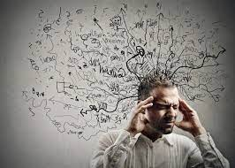
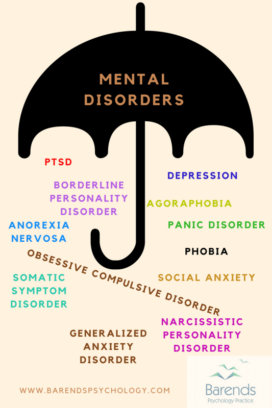
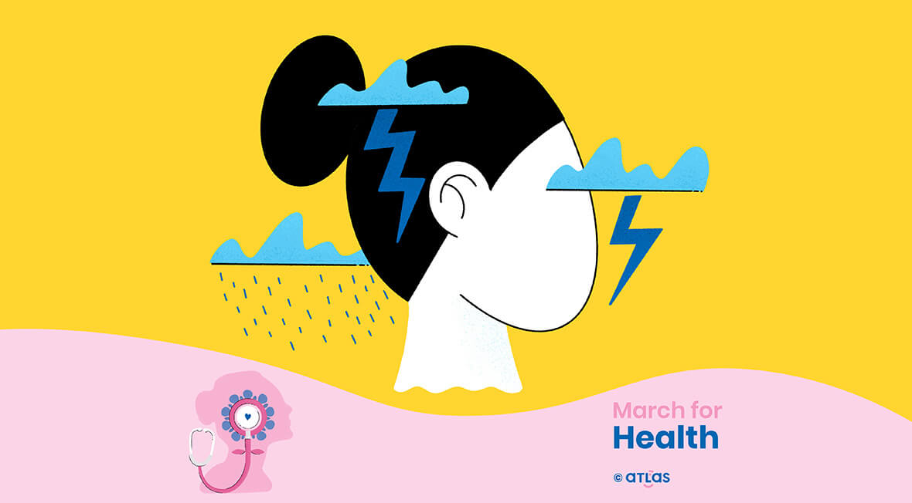

|  | Pentru definirea diverselor tipuri de afecțiuni, specialiștii folosesc termenul „tulburare”, termen regăsit și în două dintre cele mai importante lucrări de referință din domeniile psihologiei și psihiatriei: „Manualul de diagnostic și statistică a tulburărilor mintale” (DSM) al Asociației Americane de Psihiatrie și „Clasificarea tulburărilor mintale și de comportament” (ICD) a Organizației Mondiale a Sănătății, unde tulburarea reprezintă: „un set de simptome sau comportamente recognoscibile clinic, asociate în majoritatea cazurilor, cu disconfort sau interferență în funcționarea persoanei”. Tot în lucrările de referință, sintagma care definește categoria care cuprinde toate tipurile de tulburări este de „tulburări mintale”. Clasificările în categorii distincte se fac luând în considerare perioada în care apar, cauzele sau acea funcție a organismului pe care o afectează. |
Problemele mintale nu vin cu o singură schimbare de atitudine, de comportament, ci cu o combinație de stări. Următoarele semne te pot ajuta să îți dai seama dacă persoana din preajma ta care manifestă tulburări comportamentale are o suferință mintală.
Fiecare persoană traversează, din când în când, perioade stresante. Însă anxietatea poate fi semnul unei probleme de sănătate mintală, atunci când este constantă. Alte probleme generate de anxietate pot include palpitații cardiace, dificultăți de respirație, dureri de cap, agitație, diaree.
O persoană care suferă de tulburări mintale își pierde brusc interesul pentru un hobby, să spunem, pentru pescuit sau pentru fotbal. La acest dezinteres se adaugă o stare de tristețe, de iritabilitate care durează câteva săptămâni sau chiar mai mult, o lipsă de motivație și de energie.Persoana respectivă e tentată să izbucnească în mod constant în plâns, ceea ce înseamnă că ar putea avea de a face cu o depresie.
Toată lumea are diferite stări de spirit, dar schimbările bruște și dramatice de atitudine, cum ar fi accesele de furie, pot fi un simptom al unei boli mintale.
În general, avem nevoie de 7-9 ore de somn în fiecare noapte. Atunci când o persoană doarme prea mult sau prea puțin, se trezește noaptea fără motiv, ar putea fi indicatori ai unei boli psihice.
Fluctuațiile de greutate sau pierderea rapidă în greutate ar putea fi unul dintre semnele de avertizare ale unei tulburări psihice precum depresia. Și alte probleme de sănătate mintală pot avea impact asupra apetitului și greutății.
Fiecare persoană are nevoie de momente de liniște, însă retragerea din viața socială a unei persoane care era foarte activă este un semnal de alarmă.Dacă la un prieten sau la un cunoscut se observă tendința de autoizolare în mod regulat, acesta ar putea suferi o depresie, o tulburare bipolară sau altă problemă de sănătate mintală.
Utilizarea în cantități mari a unor substanțe precum alcoolul, tutunul sau drogurile ar putea fi un semn, dar și un factor care să contribuie la dezvoltarea unei tulburări de natură psihică.
Gânduri de genul "Sunt un ratat", "E vina mea" sau "Sunt lipsit de valoare" sunt toate semnele posibile ale unei probleme de sănătate mintală, cum ar fi depresia.Persoana care suferă astfel de sentimente de învinovățire are cel mai probabil nevoie de ajutor medical specializat, cu atât mai mult cu cât există riscul ca atunci când stările se acutizează să aibă inclusiv tentative de sinucidere.
|  |  | Cele mai cunoscute tulburări psihiceCele mai cunoscute tulburări psihice sunt: depresia, tulburarea bipolară, schizofrenia, anxietatea, atacurile de panică, insomnia, anorexia nervoasă, autismul, bulimia, demența, dependențele, ipohondria, isteria, nevroza, psihoza, tulburarea de personalitate narcisică, tulburarea de personalitate paranoidă, dismorfofobia, tulburarea obsesiv-compulsivă și multe altele. În continuare vom descrie câteva dintre cele mai sus menționate. |
Depresia clinică sau depresia majoră este o tulburare afectivă caracterizată de cel puțin două săptămâni de dispoziție scăzută prezentă în majoritatea situațiilor. Adesea este însoțită de stimă de sine scăzută, pierderea interesului pentru activități plăcute în mod normal, energie redusă și durere emoțională fără o cauză clară.
Simptomele care durează mai mult de două săptămâni și cu o severitate care împiedică desfășurarea normală a activităților zilnice indică prezența episodului depresiv major.
Se presupune că doar o mică parte din cei care suferă de depresie ajung să conștientizeze această afecțiune și să se supună tratamentului corespunzător. Motivele sunt frica de stigmatizare socială, orgoliul personal și ignoranța.
Schizofrenia (greacă Σχιζοφρένεια schizein = a despica, a scinda, phren = minte, suflet), (Bleuler, 1911), sinonimă cu Dementia praecox (Kraepelin, 1896) este o denumire a unui grup de boli mintale incluse în categoria psihozelor endogene. Caracteristică este apariția unor manifestări psihopatologice majore, cum sunt halucinațiile, deliruri, tulburări formale de gândire, tulburări afective, tulburări de comportament, dezorganizarea personalității. Până la data actuală nu au fost puse în evidență cauze corporale decelabile. În sistemele de clasificare modernă se consideră obligatorie pentru stabilirea diagnosticului o durată minimă a manifestărilor morbide. Tablourile clinice de tip schizofrenic, care nu îndeplinesc și acest criteriu, sunt clasificate - până la proba timpului - drept boli schizofreniforme. Schizofrenia este una din cele mai severe afecțiuni psihiatrice, cu repercusiuni grave atât pentru bolnav, cât și pentru aparținători, mai ales că nu se poate prevedea niciodată care va fi evoluția bolii, în pofida tratamentelor moderne care au modificat radical prognoza privind încadrarea socială a bolnavilor. Schizofrenia este o psihoză caracterizată prin deteriorarea proceselor de gândire și de răspunsuri emoționale inadecvate. Tulburarea se manifestă prin halucinații auditive, deliruri paranoide sau bizare sau prin vorbire și gândire dezorganizate și este însoțită de disfuncție socială sau ocupațională semnificativă. Debutul acestor simptome apare de obicei la începutul perioade adulte, cu o prevalență globală de-a lungul vieții în jur de 0,3–0,7%. Diagnosticul se bazează pe comportamentul observat și pe experiențele raportate de pacient.
Atacul de panică reprezintă o stare instalată brusc, de frică sau de anxietate intensă, în situații în care nu este amenințată viața. Acesta poate determina credința că persoana pierde controlul, va avea o moarte iminentă sau va „înnebuni”. Se asociază frecvent și cu manifestări fizice neplăcute: accelerarea ritmului cardiac, respirații rapide și scurte, transpirații. Senzația este descrisă de către unele persoane ca fiind de intensitatea unui atac de cord.
Atacurile de panică încep de obicei din senin atingând punctul maxim după aproximativ 10 minute și pot dura până la 30 de minute. Atacurile de panică pot dura câteva minute sau pot apărea frecvent durând mai mult timp, câteodată câteva ore. De obicei persoanele care suferă un atac de panică vor avea o senzație de anxietate de fond între atacuri. O parte dintre aceasta se datorează anxietății anticipatorii (frica de a nu mai avea încă un atac).
Cei ce suferă un atac de panică de multe ori raportează o frică sau o senzație de moarte, "simt că înnebunesc", sau au o senzație asemănătoare unui atac de cord sau "lumină interminentă", leșin sau greață, o senzație greoaie în tot corpul, respirație greoaie (și mai tot timpul hiperventilație), sau pierderea controlului de sine. Alți oameni experimentează și o viziune de tunel, în general din cauza presiunii sângelui care părăsește capul către celelalte părți ale corpului pe care corpul le simte ca fiind în pericol. Aceste senzații îl pot face pe cel ce suferă un atac de panică să părăsească sau să nu călătorească prin aceleași locuri unde a mai avut parte de asemenea atacuri. Un atac de panică este un răspuns către sistemul nervos simpatic (SNS). Cele mai multe simptome includ tremur, dispnee (scurtarea respirației), palpitații, dureri în piept (sau o senzație de presiune asupra pieptului), frisoane, senzații de arsură (în special în zona feței sau a gâtului), transpirații, amețeli, senzația de leșin, hiperventilație, pierdere a simțurilor, senzație de sufocare. Acestea rezultă într-o anxietate ridicată.
Bulimia nervoasă este o dereglare digestivă caracterizată prin hrănire în exces, recurentă, urmată de un comportament compensatoriu. Cea mai obișnuită formă—practicată de mai mult de 75% dintre oamenii care au bulimia nervoasă—este vomare auto-provocată, uneori numită curățare; post, folosirea unor laxative, clisme, diuretice, precum și printr-un antrenament prelungit sunt și ele obișnuite.
Ipohondria, în termeni medicali hipocondria, reprezintă preocuparea excesivă sau teama de a suferi de o boală gravă. De cele mai multe ori starea de anxitate persistă chiar și după un consult medical după care bolnavul este asigurat că temerile legate de simptomele sale nu au o bază medicală solidă, sau dacă există o boală la baza simptomelor, temerile sale sunt mult exagerate. Majoritatea celor ce suferă de această boală tind să își focalizeze teama asupra unui anumit simptom, cum ar fi problemele gastro-intestinale, palpitațiile sau oboseala musculară. Conform DSM-IV-TR, ipohondria afectează între 1% și 5% din populație.
De cele mai multe ori ipohondria este definită ca teama ca mici simptome să reprezinte un indicator al unei boli grave, constantă autoanaliză și autodiagnosticare, precum și o excesivă preocupare față de propriul organism. Multe persoane, suferind de acestă boală, exprimă neîncredere în diagnosticul medicilor precum și faptul că asigurările medicilor față de absența unei boli serioase sunt neconvingătoare sau de scurtă durată. Mulți ipohondri necesită constante reasigurări, fie de la doctori, fie de la familie sau prieteni, boala putând deveni un adevărat calvar atât pentru bolnav, cât și pentru familia și prietenii acestuia.
Psihoză (din greacă ψυχή "psyche", minte/suflet, și -ωσις "-osis", stare anormală) este un termen medical folosit pentru a descrie starea mentală în care gândirea și percepția sunt grav afectate.
Persoanele care trăiesc un episod psihotic pot avea halucinații, credințe iluzorii de durată (ex: iluzii paranoide sau grandomanii), schimbări în structura de personalitate și manifestări de gândire dezorganizată. Este adesea acompaniată de non-înțelegerea comportamentului propriu (acum cu o natură bizară), dificultăți în interacțiunea socială și dificultăți în executarea activităților cotidiene. Un episod psihotic este adesea descris ca implicând o „pierdere a contactului cu realitatea”. Dicționarul The American Heritage Stedman's Medical Dictionary definește psihoza ca „O tulburare mentală gravă, cu sau fără deteriorări organice, caracterizată prin dezorganizarea personalității, pierderea contactului cu realitatea și care cauzează deteriorarea funcționării normale sociale.”
Dismorfofobia este definită ca fiind obsesia sau preocuparea exagerată pentru un defect fizic minor. Persoana afectată arată normal pentru cei din jur, însă nu și în viziunea ei. În literatura de specialitate dismorfofobia se regăsește și sub denumirea de tulburare dismorfică corporală. Este o tulburare de natură psihologică care apare îndeosebi în adolescență și poate avea o evoluție cronică. În majoritatea cazurilor, conștientizarea bolii este absentă și se asociază cu incapacitatea de a funcționa normal din punct de vedere social. Toți cei afectați dezvoltă un delir de referință, se retrag din activitățile sociale, limitează contactul cu alte persoane, considerând că toți le observă defectul comentând la adresa lor, evaluându-i cât mai negativ cu putință. Viziunea deformată asupra corpului lor transformă gândurile în obsesii, iar suferința emoțională este îngrozitoare.
În limba engleză termenul pentru dismorfofobie este „body dysmorphic disorder”. Boala a fost inclusă în DSM (Manualul de Diagnostic și Statistică a Tulburărilor Mentale) în cadrul tulburărilor somatoforme. Este considerată o afecțiune destul de gravă, asociată cu depresie majoră și cu o rată mare de suicid.
Preocuparea celor afectați vizează, în special, pielea (acnee, cicatrici, riduri etc.), nasul, părul, sânii, buzele etc. Incidența bărbați–femei este egală, iar prevalența ar fi cam de 1–2%, ceva mai crescută la adolescenți.
Tulburarea obsesiv-compulsivă (TOC) este o tulburare mintală în care persoana simte nevoia de a îndeplini anumite rutine în mod repetat (numite „compulsii”) sau are anumite gânduri în mod repetat (numite „obsesii”). Persoana este incapabilă să controleze gândurile sau activitățile pentru mai mult de o scurtă perioadă de timp. Compulsii obișnuite sunt spălatul pe mâini, numărarea lucrurilor sau a verifica dacă ușa este încuiată. Unora le poate fi dificil a arunca lucruri care nu mai sunt folosite. Aceste activități au loc într-o asemenea măsură încât viața zilnică a persoanei este afectată negativ. Acestea adesea iau mai mult de o oră din zi. Cei mai mulți adulți realizează că comportamentele lor de acest fel nu au sens. Condiția este asociată cu ticuri, tulburarea de anxietate și un risc crescut de sinucidere.
Narcisismul este o trăsătură de personalitate caracterizată de părerea excesiv de bună despre propria persoană, alături de căutarea de admirație și atitudini de grandoare și egoism. Termenul provine din mitologia greacă, unde tânărul Narcis s-a îndrăgostit de imaginea sa, reflectată în apă. Narcisismul este un concept în teoria psihanalitică, care a fost popular introdus în eseul lui Sigmund Freud despre On Narcissism (1914). Asociația Americană de Psihiatrie a inclus și clasificat tulburarea de personalitate narcisistică în manualul său Diagnostic and Statistical Manual of Mental Disorders (DSM) din 1968, bazându-se pe conceptul istoric de megalomanie.